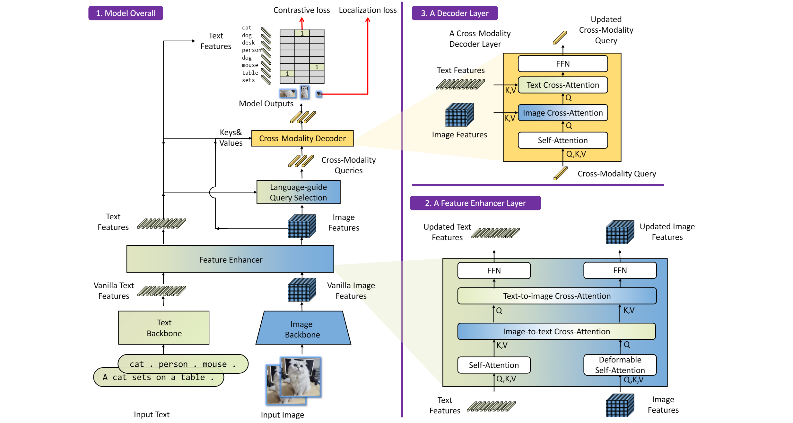

Problem Formulation & Motivation
 Fig 1: CLIP learns global image–text alignment but does not provide spatial localization.
Fig 1: CLIP learns global image–text alignment but does not provide spatial localization.
Closed-Set: $f(I) \rightarrow \{(b_i, c_i)\}, \quad c_i \in \mathcal{C}_{\text{fixed}}$ — Constrained to training classes.
Open-Vocabulary: $f(I, T) \rightarrow \{(b_i, t_j)\}$ — Localize arbitrary free-form text at inference.
Core Challenges
1. Semantic-Spatial Alignment
2. Zero-Shot Generalization
3. Accuracy Preservation
1. Semantic-Spatial Alignment
2. Zero-Shot Generalization
3. Accuracy Preservation
Prior Limitations
• YOLO: Fixed classifier
• CLIP: No spatial localization
• DETR: No language grounding
• YOLO: Fixed classifier
• CLIP: No spatial localization
• DETR: No language grounding
Research Landscape
Unifying Principle: $\text{OVD} = \underbrace{\text{Region Localization}}_{\text{"Where?"}} + \underbrace{\text{Language Alignment}}_{\text{"What?"}}$ — The critical decision is when/how these streams interact.
Early / Deep Fusion
Grounding DINO (Liu et al., 2023)
• Language injected throughout pipeline
• Cross-attention at multiple stages
• Jointly learned end-to-end
Philosophy: Language as a first-class citizen
Grounding DINO (Liu et al., 2023)
• Language injected throughout pipeline
• Cross-attention at multiple stages
• Jointly learned end-to-end
Philosophy: Language as a first-class citizen
Late / Efficient Fusion
YOLO-World (Cheng et al., 2024)
• Text embeddings pre-computed offline
• lightweight vision-language interaction
• Final matching via dot-product
Philosophy: Language as a lookup index
YOLO-World (Cheng et al., 2024)
• Text embeddings pre-computed offline
• lightweight vision-language interaction
• Final matching via dot-product
Philosophy: Language as a lookup index
Fundamental Trade-off: Representation Power $\longleftrightarrow$ Inference Efficiency
Grounding DINO Architecture
Built on DINO (improved DETR with denoising training and anchor refinement), retrofitted with grounded pre-training for open-set detection.
| Stage | Component | Role |
|---|---|---|
| 1 | Image Backbone (Swin-T) | Multi-scale visual features $\mathbf{F}_v$ |
| 2 | Text Encoder (CLIP / VL) | Token-level text features $\mathbf{F}_t$ |
| 3 | Feature Enhancer | Deep vision-language fusion |
| 4 | Language-Aware Query Sel. | Text-guided initial queries $\mathbf{Q}_0$ |
| 5 | Decoder (6 layers) | Iterative object refinement |
| 6 | Grounding Head | Box prediction + similarity scores |
Key Insight: Language information is integrated at multiple stages (feature enhancement, query initialization, and decoder refinement), enabling consistent multimodal alignment throughout the pipeline.
Grounding DINO: Visual Pipeline

Multimodal Fusion (Cross-Attention)
The Feature Enhancer performs cross-modal deformable attention between visual and textual features:
$$\text{DeformAttn}(\mathbf{Q}, \mathbf{K}, \mathbf{V}) = \sum_{k \in \text{sampled points}} \mathbf{A}_k \cdot \mathbf{V}_k$$
Why Sparse Sampling? Instead of attending to all spatial positions, it samples only $K$ learned reference points, reducing complexity and making cross-modal attention tractable over high-res maps.
Image $\rightarrow$ Text
$\mathbf{F}'_v = \text{DeformAttn}(\mathbf{F}_v, \mathbf{F}_t, \mathbf{F}_t)$
"What words describe this region?"
$\mathbf{F}'_v = \text{DeformAttn}(\mathbf{F}_v, \mathbf{F}_t, \mathbf{F}_t)$
"What words describe this region?"
Text $\rightarrow$ Image
$\mathbf{F}'_t = \text{DeformAttn}(\mathbf{F}_t, \mathbf{F}_v, \mathbf{F}_v)$
"Where are the words grounded?"
$\mathbf{F}'_t = \text{DeformAttn}(\mathbf{F}_t, \mathbf{F}_v, \mathbf{F}_v)$
"Where are the words grounded?"
Key Insight: $\mathbf{F}_v \leftrightarrow{\text{CrossAttn}} \mathbf{F}_t \rightarrow \mathbf{F}_{\text{aligned}}$. Language is structurally injected into the visual representation.
Object Queries & Detection Mechanism
Inherits query-based detection from DETR. A fixed set of learned queries is iteratively refined.
Language-Aware Query Selection: Initial queries are selected by choosing the Top-K candidate regions with the highest region-text similarity.
Iterative Refinement: $\mathbf{q}_i^{(l+1)} = \text{DecoderLayer}(\mathbf{q}_i^{(l)}, \mathbf{F}_{\text{aligned}})$
- Self-Attention among queries (suppresses duplicates)
- Cross-Attention to fused features (refines semantics/spatial)
Properties
• Each query is encouraged to represent a single object
• Global attention (no receptive field limits)
• Set-based prediction reduces reliance on heuristic NMS
• Each query is encouraged to represent a single object
• Global attention (no receptive field limits)
• Set-based prediction reduces reliance on heuristic NMS
Conceptual Shift
Traditional: "Classify each anchor"
Grounding DINO: "Predict objects described by text" $\rightarrow$ Open output space.
Traditional: "Classify each anchor"
Grounding DINO: "Predict objects described by text" $\rightarrow$ Open output space.
Grounding Head & Training Objective
The head converts refined queries into boxes and region-text similarity scores (replacing fixed class logits with region–text similarity scores) via dot product in the shared embedding space.
Composite Loss: $\mathcal{L} = \lambda_{\text{bbox}} \mathcal{L}_{\text{bbox}} + \lambda_{\text{GIoU}} \mathcal{L}_{\text{GIoU}} + \lambda_{\text{align}} \mathcal{L}_{\text{align}}$
| Loss Component | Purpose |
|---|---|
| $\mathcal{L}_{\text{bbox}}$ (L1) | Absolute coordinate regression |
| $\mathcal{L}_{\text{GIoU}}$ | Shape-aware box overlap optimization |
| $\mathcal{L}_{\text{align}}$ (Contrastive) | Pull matched region-text pairs, push negatives (CLIP-style) |
Key Insight: Detection becomes region-text contrastive learning. After Hungarian matching, the contrastive loss enables generalization to unseen text queries at inference.
YOLO-World Architecture
YOLO-World (Cheng et al., 2024) retrofits the YOLO framework with vision-language capabilities while strictly preserving real-time inference speeds.
| Stage | Component | Role |
|---|---|---|
| 1 | CSPDarknet Backbone | Hierarchical visual features $\{\mathbf{P}_3, \mathbf{P}_4, \mathbf{P}_5\}$ |
| 2 | RepVL-PAN | Lightweight vision-language interaction (reparameterized into conv at inference) |
| 3 | Detection Head | Box, objectness, region embedding $\mathbf{z}_i$ |
| 4 | CLIP Text Encoder | Text embeddings $\{\mathbf{t}_j\}$ (Precomputed offline for inference) |
Key Insight: Decoupling language from the detection network enables constant-time scaling with vocabulary size at inference.
YOLO-World: Visual Pipeline

Detection Head Reformulation
The critical change: replacement of fixed classifier weights, with embedding-based matching.
Traditional YOLO (Closed-Set)
$P(c \mid \mathbf{z}) = \text{softmax}(\mathbf{W}\mathbf{z}) \in \mathbb{R}^C$
$\mathbf{f}_i \xrightarrow{\mathbf{W}} \mathbb{R}^C \xrightarrow{\text{softmax}} P(c)$
Fixed weight matrix $\rightarrow$ Fixed classes
$P(c \mid \mathbf{z}) = \text{softmax}(\mathbf{W}\mathbf{z}) \in \mathbb{R}^C$
$\mathbf{f}_i \xrightarrow{\mathbf{W}} \mathbb{R}^C \xrightarrow{\text{softmax}} P(c)$
Fixed weight matrix $\rightarrow$ Fixed classes
YOLO-World (Open-Vocab)
$S_{i,j} = \mathbf{z}_i \cdot \mathbf{t}_j$
$\mathbf{f}_i \xrightarrow{\text{Proj}} \mathbb{R}^D \xrightarrow{\cdot \mathbf{t}_j} S_{i,j}$
Embedding projection $\rightarrow$ Any class
$S_{i,j} = \mathbf{z}_i \cdot \mathbf{t}_j$
$\mathbf{f}_i \xrightarrow{\text{Proj}} \mathbb{R}^D \xrightarrow{\cdot \mathbf{t}_j} S_{i,j}$
Embedding projection $\rightarrow$ Any class
Why This Works: During training, contrastive loss maps region embeddings to the CLIP space. At inference, CLIP text embeddings can be computed (typically precomputed) for arbitrary text queries.
Offline Vocabulary & Efficiency
The most consequential design decision: decoupling text encoding from the inference loop.
$$\mathbf{t}_j = \text{CLIP}_{\text{text}}(\text{"category } j\text{"}) \quad \longleftarrow \quad \text{Computed once, stored as lookup table}$$
| Advantage | Explanation |
|---|---|
| Zero text encoding cost | No CLIP forward pass at runtime |
| True real-time speed | YOLO-World-L: 52 FPS | YOLO-World-S: 74 FPS (T4) |
| Scalable vocabulary | Pre-compute 10 or 10,000 categories — cost stays constant |
| Edge-friendly | Smaller model, No heavy transformer modules at inference |
Complexity Reduction: $\underbrace{O(N^2)}_{\text{Grounding DINO}} \quad \longrightarrow \quad \underbrace{O(N \cdot D)}_{\text{YOLO-World}}$
Note: During training, the CLIP text encoder is active. The offline strategy primarily applied at inference for efficiency.
Inference Pipeline
Step 1: Feature Extraction $I \xrightarrow{\text{CSPDarknet}} \{\mathbf{P}_3, \mathbf{P}_4, \mathbf{P}_5\}$
Step 2: Enhancement $\{\mathbf{P}_3..\mathbf{P}_5\} \xrightarrow{\text{RepVL-PAN}} \{\hat{\mathbf{P}}_3..\hat{\mathbf{P}}_5\}$ (cross-modal layers are reparameterized as conv operations at inference)
Step 3: Region Embedding $\hat{\mathbf{P}}_s \xrightarrow{\text{Head}} \{\mathbf{z}_i\}_{i=1}^{N} \in \mathbb{R}^{512}$
Step 4: Retrieval $\mathbf{S} = \mathbf{Z}\mathbf{T}^T \in \mathbb{R}^{N_{\text{anchors}} \times |\mathcal{V}|}$ (Matrix multiplication)
Step 5 & 6: Scoring & NMS $\text{Score}_{i,j} = p_{\text{obj},i} \times S_{i,j} \rightarrow$ Standard NMS
Interpretation: Detection = Dense Region Proposal $\longrightarrow$ Embedding Retrieval
Deep Comparison
| Dimension | Grounding DINO | YOLO-World |
|---|---|---|
| Fusion Strategy | Deep (Enhancer + Query + Decoder) | Moderate (RepVL-PAN) + Offline |
| Detection Paradigm | Query-based (DETR) | Grid/Anchor-based (YOLO) |
| Language Role | Pervasive (shapes features) | Guiding (modulates PAN) |
| Reasoning | Strong cross-modal reasoning | Limited cross-modal interaction |
| COCO Zero-Shot (reported) | 52.5 AP | 35.4 AP (L) |
| Speed | ~10 FPS (A100) | 52–74 FPS (T4) |
| Complexity | Quadratic attention | Linear embedding matching |
| Edge Deployment | Not feasible | Feasible (S variant) |
GD Philosophy: "Learn a unified representation where vision and language are inseparable."
YW Philosophy: "Detect first, retrieve labels later." Prioritize deployment readiness.
Research Evolution & Emerging Directions
Post-Grounding DINO
• GD 1.5 (2024): Improved data scaling
• Detection $\rightarrow$ Segmentation: Integration with SAM
• Grounded Generation: Spatial control for diffusion
• GD 1.5 (2024): Improved data scaling
• Detection $\rightarrow$ Segmentation: Integration with SAM
• Grounded Generation: Spatial control for diffusion
Post-YOLO-World
• YW v2 (2024): Better pre-training strategies
• Scalable Systems: Multi-GPU video analytics
• Edge Deployment: ONNX/TensorRT variants
• YW v2 (2024): Better pre-training strategies
• Scalable Systems: Multi-GPU video analytics
• Edge Deployment: ONNX/TensorRT variants
Converging Trajectory: Detection $\longrightarrow$ Grounding $\longrightarrow$ Reasoning $\longrightarrow$ Action
Open Questions: Can we achieve GD accuracy at YW speed? How to handle compositional queries efficiently? Will specialized OVD models survive, or will generalist multimodal models subsume them?
Conclusion
$$\text{Object Detection} = \text{Semantic Alignment Between Spatial Regions and Language}$$
The distinction is whether language shapes the visual representation itself (Grounding DINO) or serves as a retrieval interface over fixed visual representations (YOLO-World).
Grounding DINO
(Representation-Driven)
• Language architecturally embedded
• Sets the accuracy ceiling
• Cost: Speed & scalability
(Representation-Driven)
• Language architecturally embedded
• Sets the accuracy ceiling
• Cost: Speed & scalability
YOLO-World
(Efficiency-Driven)
• Language as retrieval index
• Sets the efficiency ceiling
• Cost: Reasoning depth
(Efficiency-Driven)
• Language as retrieval index
• Sets the efficiency ceiling
• Cost: Reasoning depth
References:
Liu et al., "Grounding DINO: Marrying DINO with Grounded Pre-Training for Open-Set Object Detection," arXiv 2023
Cheng et al., "YOLO-World: Real-Time Open-Vocabulary Object Detection," arXiv 2024
Liu et al., "Grounding DINO: Marrying DINO with Grounded Pre-Training for Open-Set Object Detection," arXiv 2023
Cheng et al., "YOLO-World: Real-Time Open-Vocabulary Object Detection," arXiv 2024